We crossed over to Albania from Corfu in 2018 on a ferry and it turned out to be one of the most memorable day trips we have ever done. Saranda is a beautiful coastal town on the Ionian Sea, the ancient ruins are extraordinary and the Blue Eye — a vivid natural spring that looks almost unreal — is simply stunning. The locals were among the friendliest we have encountered anywhere in Europe. Albania is an absolute gem of a country and well worth the trip.
What this trip gave us:
The story
We were on holiday in Corfu in 2018 when we decided to take the short ferry crossing over to Albania for the day. It was one of the best decisions we made. The ferry from Corfu to Saranda takes around 35 minutes and runs regularly — it could not be easier to add Albania onto a Corfu trip.
We joined a guided tour once we arrived in Saranda, which was a brilliant way to make the most of a day trip. The guides were knowledgeable, enthusiastic and proud to show off their country — and with good reason. The ancient ruins we visited were extraordinary in scale and atmosphere, sitting in a beautiful landscape that felt a world away from the tourist trails of nearby Greece.
The absolute highlight of the day was the Blue Eye — Syri i Kaltër in Albanian. It is a natural spring where fresh water bubbles up from underground with such clarity and intensity that the pool takes on a vivid, electric blue colour that seems almost too beautiful to be real. The setting in the surrounding woodland makes it even more magical. It is one of the most extraordinary natural sights we have ever seen anywhere.
Throughout the day we were struck by how friendly and welcoming everyone we met was. Albania is a country that is increasingly finding its place on the European travel map — and it deserves every bit of the attention it is getting. It is beautiful, fascinating and genuinely special.
One of the great little travel hacks — a 35-minute ferry from Corfu drops you into a completely different country and culture. Simple, affordable and brilliant.
Simply one of the most beautiful natural sights we have ever seen. The vivid blue of the spring water against the green woodland setting is extraordinary — nothing prepares you for it.
Albania's ancient history is incredible and often overlooked — the ruins we visited were vast, atmospheric and almost entirely free of crowds. A proper off-the-beaten-track experience.
Saranda's promenade curves around a beautiful bay with clear Ionian water and views back towards Corfu. Lovely to walk, with great food and coffee options along the way.
The friendliness and warmth of the people we met was genuinely striking. Albania has a reputation for hospitality that is very much deserved — locals go out of their way to make visitors feel welcome.
That rare feeling of discovering somewhere that the crowds haven't fully found yet. Albania has it in abundance right now. It won't stay undiscovered forever — go while it still feels like a secret.
From the vivid blue of the spring and the crumbling ancient walls to the Ionian coastline and the streets of Saranda — Albania through our lens.
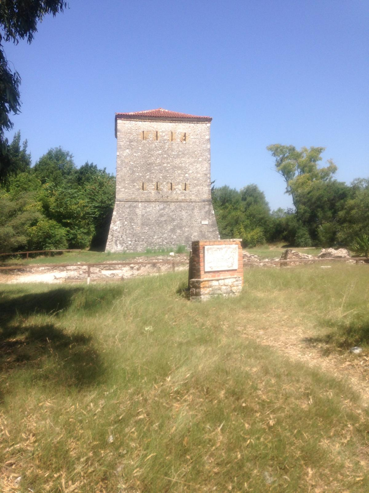
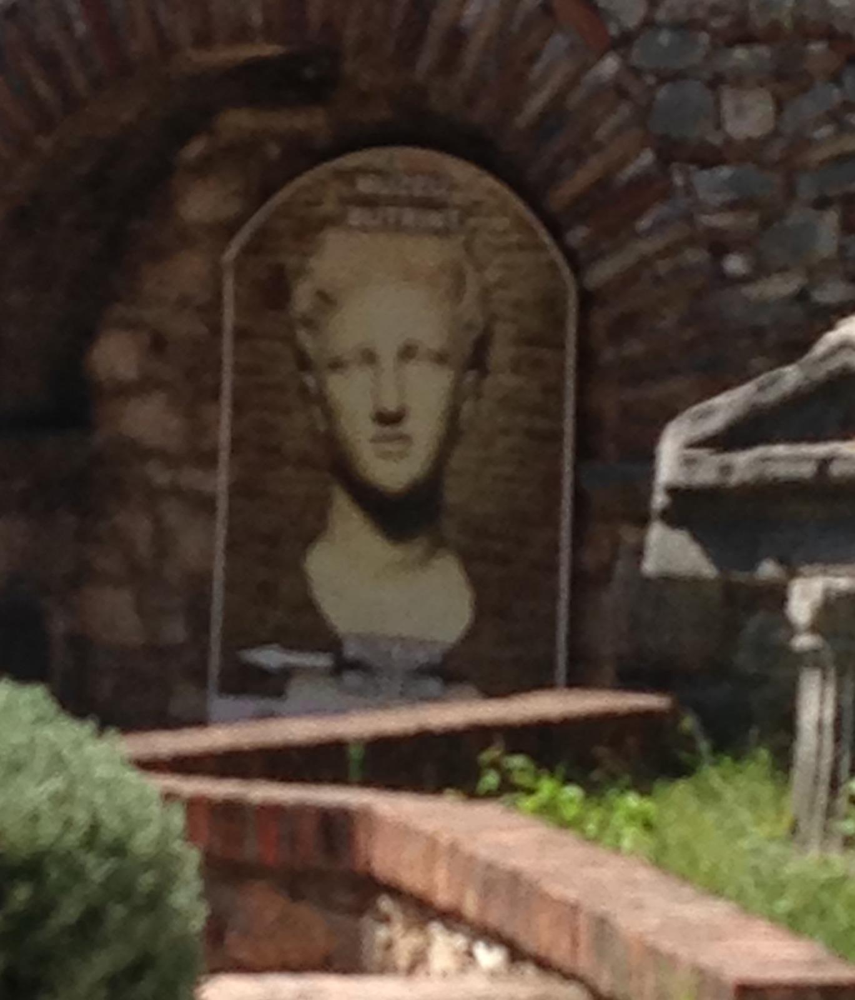
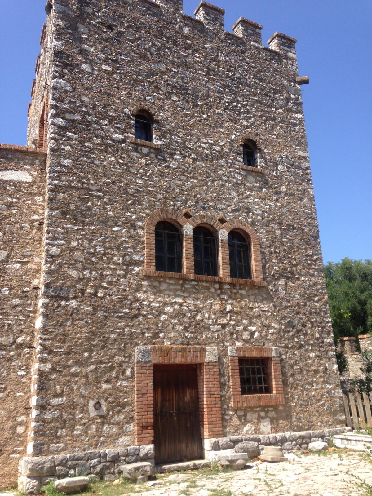
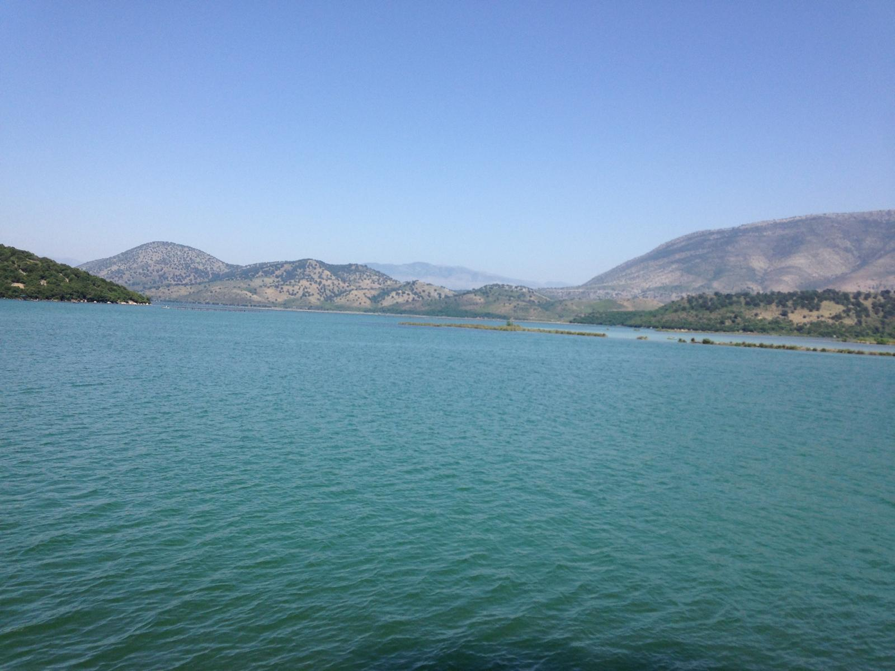
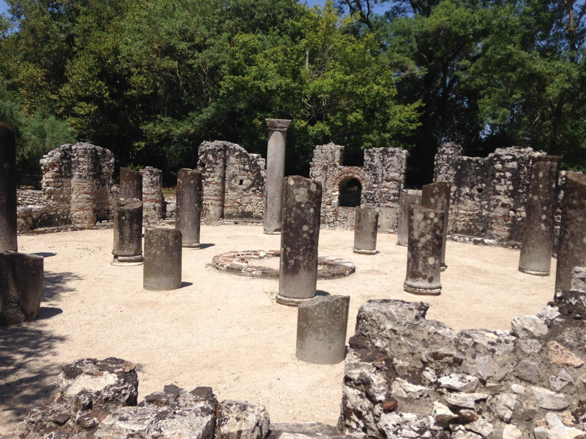
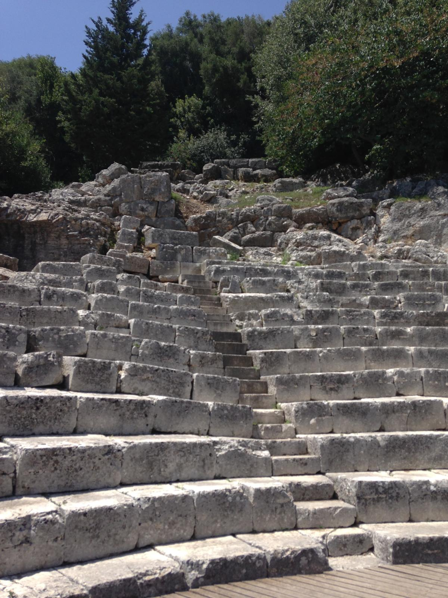
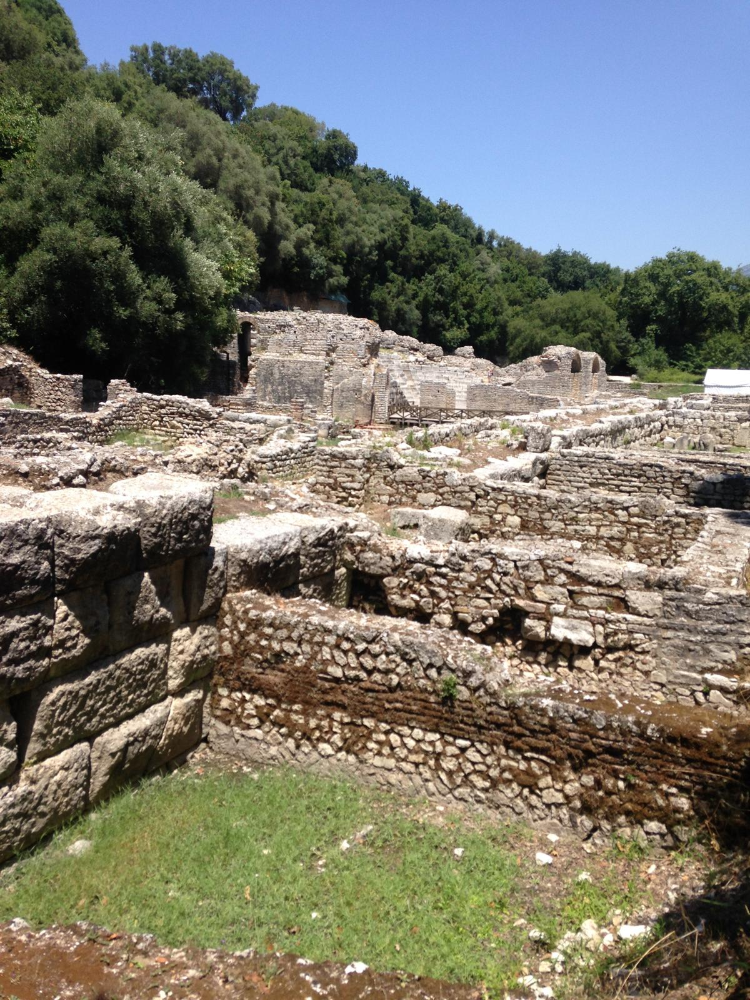
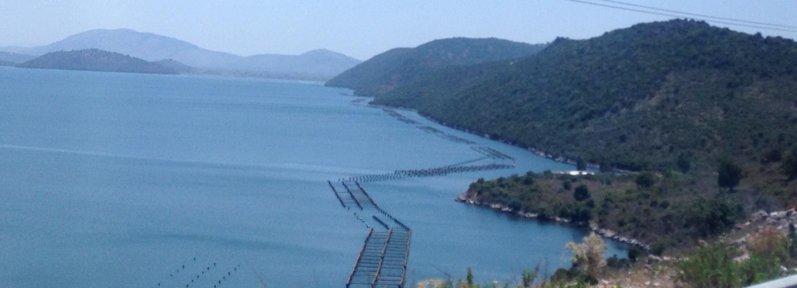
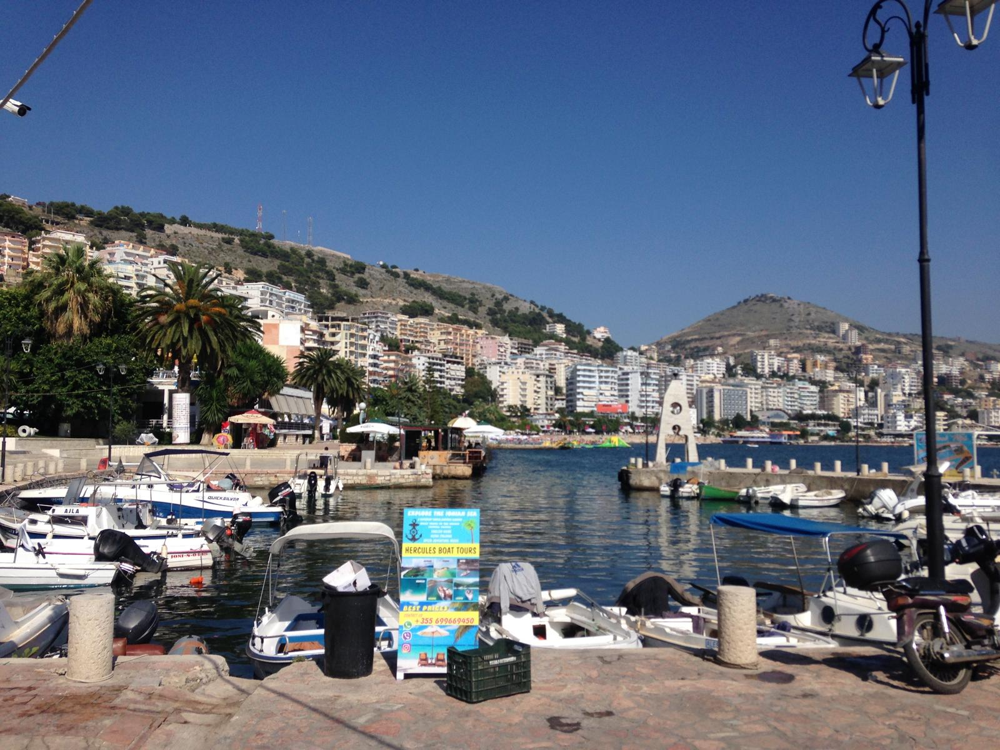
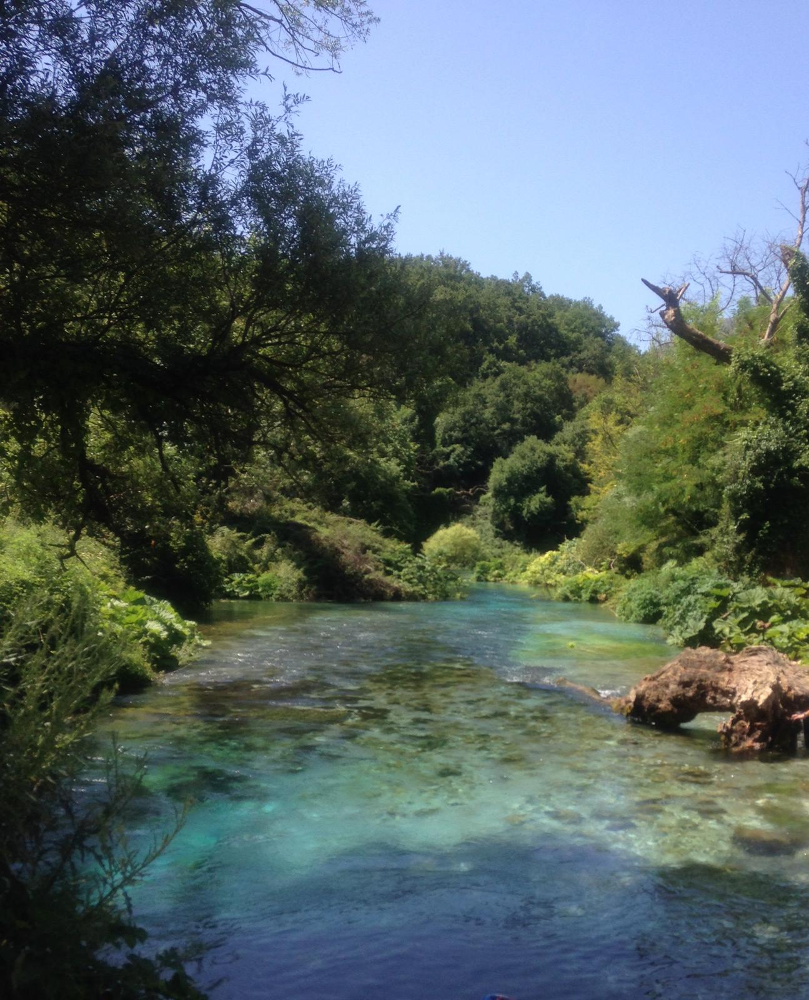
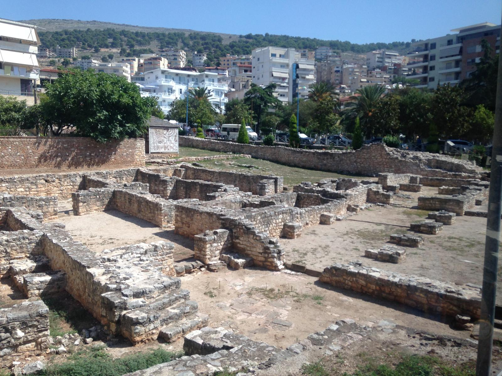
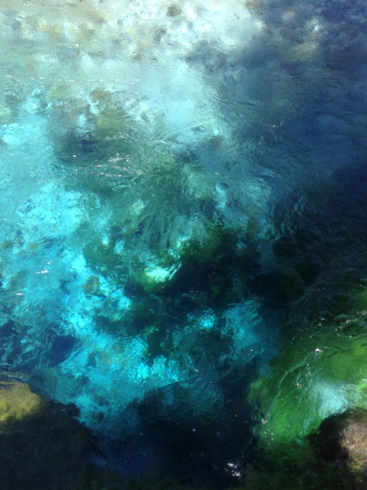
Want to explore Albania properly with expert guides and everything taken care of? TourRadar has brilliant tours covering the very best of this underrated gem.
A day trip from Corfu is a wonderful introduction to Albania — but the country rewards a longer stay. The Albanian Riviera, the capital Tirana, the UNESCO sites, the mountains and the incredible food culture all deserve more time. A guided tour is a brilliant way to see more without the hassle of planning logistics in a less-visited destination.
Disclosure: This is an affiliate link. If you book through it we may earn a small commission at no extra cost to you.
From Blue Eye tours and Saranda day trips to guided ruins visits and Albanian Riviera excursions — browse Albania activities here:
Disclosure: If you book through these links we may earn a small commission at no extra cost to you.
Common questions
What to pack for Albania
Albania in summer is warm and sunny — ideal lightweight travel clothing, good walking shoes for ruins, and sun protection are the key priorities. The Blue Eye woodland walk and ancient sites mean comfortable footwear is essential.
Handy for maps and navigation in Albania — especially useful when exploring less-touristed areas and making the most of a day trip without expensive roaming charges.
View on Amazon →Albania uses Type C and F plugs — a universal travel adaptor is a must-have. Don't get caught out after a long travel day with nothing charged.
View on Amazon →Albania is endlessly photogenic — ruins, coastline, the Blue Eye. Keep a power bank in your bag and you will never miss a shot because your phone died.
View on Amazon →Essential for a day trip — carry water, sun cream, a layer, your camera and anything you pick up without weighing yourself down on the ruins walks.
View on Amazon →Stay hydrated in the Albanian summer heat — especially important on walking tours of ruins and the woodland trails around the Blue Eye.
View on Amazon →Always worth having — for blisters from walking the ruins, minor scrapes and anything else that comes up on a full day exploring a new country.
View on Amazon →Useful around the Blue Eye spring and wooded areas — a good insect repellent is worth packing for any summer trip to the Balkans.
View on Amazon →The Albanian summer sun is strong — you will be spending significant time outdoors at open ruins sites. A high SPF is essential for comfortable, safe exploring.
View on Amazon →Essential sun protection for a full day at outdoor ruins sites — a wide-brimmed hat keeps you comfortable and cool in the Albanian summer heat.
View on Amazon →Lightweight, breathable and practical — perfect for warm weather sightseeing. Linen trousers keep you cool at ruins and smart enough for a waterfront lunch.
View on Amazon →Disclosure: These are Amazon affiliate links. If you buy through them we may earn a small commission at no extra cost to you. These are all things we'd genuinely pack for a trip to Albania.
Whether it is a day trip from Corfu or a longer stay on the Albanian Riviera, Albania will surprise and delight you. Go and see for yourself why this hidden gem is rapidly becoming one of Europe's most talked-about destinations.
Affiliate disclosure: if you book through our links we may earn a small commission at no cost to you. We only recommend trips and experiences we'd be happy to stand over.